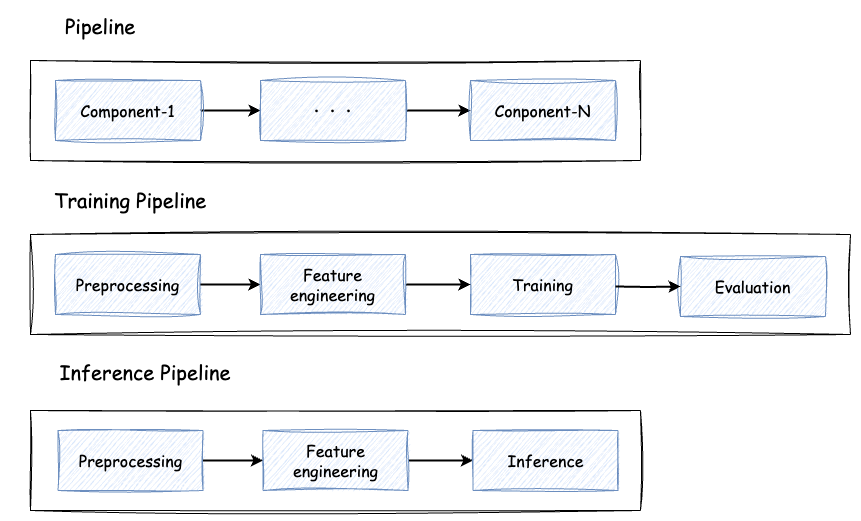
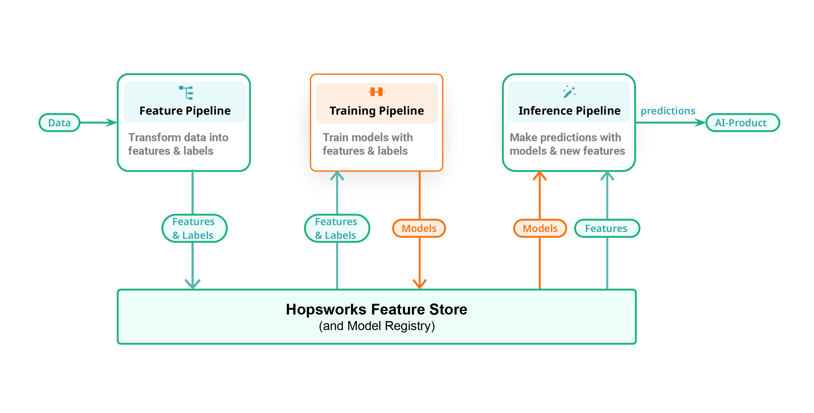
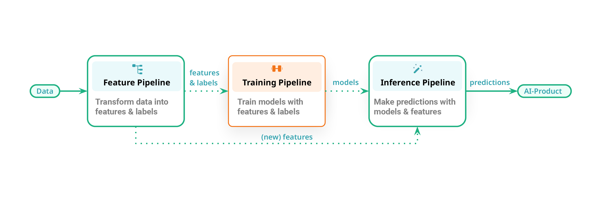
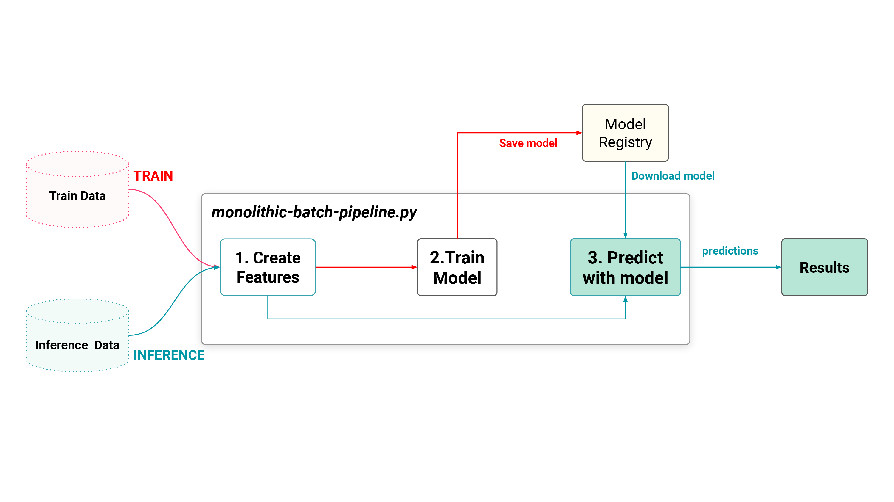

はじめに
もう今年もあと数週間ということで，1年があっという間に終わってしまいますね😅
この記事は MLOps Advent Calendar 2023 の15日目の記事になります！アドベントカレンダーの日付を選ぶ際についつい自分の好きな数字を選びがちですが，皆さんはどうですか？笑
最近，機械学習（ML）パイプラインの良い構成やパイプラインとコンポーネントの良い組み方に興味があり，それをどう管理するかのディレクトリ構成などを考えたりしているのですが，きっかけとしては参考にも載せてある「From MLOps to ML Systems with Feature/Training/Inference Pipelines」という Hopsworks の CEO である Jim Dowling が書いた記事を以前読んでとても良いなと思ったのがきっかけです．
また，AB テストなどのオンライン検証を見据えた時に，どういったディレクトリ構成だとスムーズに開発ができたり，実施までの工程を減らして素早くデプロイし，検証できるかも考えることが多々あり，良い方法を模索しているのもあります．
この記事では，その辺りの自分が今考えている内容について紹介しようと思います！技術検証系の記事ではなく，考え方の一例を紹介する形になります．
僕の中の現時点の結論は，
- コンポーネント単位ではなく，パイプライン単位で管理し，パイプラインは程よくモジュール化する
です．
パイプライン: 処理単位で分けられたコンポーネントで構成
ML パイプラインを組み立てる時，大抵の場合は処理単位で分けられたコンポーネントを用意し，それを有向グラフで繋げてパイプラインを構成することが多いかと思います．下図は学習パイプラインや推論パイプラインの例を書いています．パイプラインの中には，ストレージやデータベースからデータを抽出する処理だったり，推論や予測結果をデータベースに保存する処理が加わるかもしれません．

処理をコンポーネントもしくはモジュールというかもしれませんが，それ毎に分けて I/O を定義し，管理することはとても良いと思います．疎結合になっていることで，処理の入れ替えなどが容易でメンテナンスもしやすくなります．
一方で，こんな疑問や悩みを持ったりしています．
- どこまで細かくコンポーネントに分けて使うのが良いか？
- どの程度，共通化や汎用化を考えるのが良いか
- 過度なコンポーネント化は逆に管理しづらくなる？
- チーム開発を考えた場合にコンポーネント単位での分割は効率的なのか？1
- バッチ/リアルタイムの両方を満たすことを考えるとどうだろうか？2
（共通化や汎用化を行い再利用することを意識して設計開発することはとても大事だと思います．一方で，最初からそれを意識しすぎると中途半端なものができたりして，逆に使いづらいことが過去の経験としてあるので，何度か使われる内に共通化を進めて行く方がユースケースに合ったものが出来て良いかなと最近は思っています．）
コンポーネント単位での接続では，インターフェイスがコンポーネント間でのやり取りになり，先行するコンポーネントの出力結果に応じて後続のコンポーネントに微調整が入ることもあります．例えば，AB テストをするのに，ちょこっとだけ先行のコンポーネントを変えたことで，後続のコンポーネントにも修正が入り，それが元で既存のパイプラインに影響が出たりして厄介だなと感じたことがあります．（これは僕の実装力不足な点もあると思いますが…😅）
Feature/Training/Inference Pipelines とは？
冒頭紹介したブログでは，Feature/Training/Inference (FTI) Pipelines というものを紹介しています．これは独立した3つのパイプラインから構成されていて，それぞれが独立して開発や運用ができる点が良く，役割もパイプライン毎に明確になっています．

記事では，バッチ/リアルタイムの ML システムの例を紹介した後に，その両方に対応した Unified Architecture for ML Systems として紹介されています．
それぞれのパイプライン間のインターフェースがこの例だと，Feature Store/Model Registry になっています．これは彼らの製品である Feature Store を上手く活用する仕組みになっていてなかなか考えられているなと感じました！😄
それぞれのパイプラインの役割はどうなっているか
役割は以下のように説明されています．
- a feature pipeline that takes as input raw data that it transforms into features (and labels)
- a training pipeline that takes as input features (and labels) and outputs a trained model
- an inference pipeline that takes new feature data and a trained model and makes predictions.
- feature pipeline: 生データを入力として受け取り，特徴量（とラベル）に変換する
- training pipeline: （feature pipeline で生成された）特徴量（とラベル）を入力として受け取り，学習済みモデルを出力する
- inference pipeline: （feature pipeline で生成された）新しい特徴量と学習済みモデルを受け取り，予測を返す
例えば，レコメンドシステムのバッチ推論で良くあるパターンだと，下図3のように feature pipeline, training pipeline, inference pipeline を3つ繋げて（上側の点線）最終的に結果をストレージやデータベースに保存しておくという流れになります．
また，リアルタイムレコメンドのパターンだと，feature pipeline, inference pipeline の2つが繋がり（下側の点線）結果をアプリケーションに返す流れになります．

パイプラインは適度にコンポーネント化されていて，それぞれのステージで明確なインターフェースがあります．個々のパイプライン内でさらにコンポーネント化されていても良いですが，あくまでパイプライン間での関係を見るので，内部は柔軟になっていて良いと思います．
特に ML パイプラインはスクラップ & ビルドされることも多々あるので，そこまで内部をコンポーネントに分けてもそこまでの恩恵が無いと感じています．むしろ，チームで1つのパイプラインを開発するケースでは，これぐらいの粒度の方が開発効率が良いのではないかなと思います．
ありがちなモノリシックなバッチパイプライン（下図4）よりは遥かに使いやすく，リアルタイムへの移行もスムーズになり，開発スピードは上がるはずです．

パイプライン間のインターフェース
Feature/Training/Inference (FTI) Pipelines の考え方の場合，各パイプライン間のインターフェースはデータに関しては，Feature Store や Object Storage (S3, GCS …etc) などになるかと思います．
僕はマネージドサービスでパイプラインを組むことが多いのですが，AWS と GCP だと以下のような感じでできるのではないでしょうか．
- AWS:
- パイプライン: SageMaker + Step Functions (or SageMaker Pipelines)
- 構造: Step Functions では，ステートマシン同士の接続が可能なので，パイプライン同士の接続は容易にできる
- パイプライン間のインターフェース: S3，Amazon SageMaker Feature Store
- GCP:
- パイプライン: Vertex AI Pipelines
- 構造: コンポーネント同士はオブジェクトで繋がる仕組み．Step Functions のようにパイプライン同士の接続ができるかは把握できていない
- パイプライン間のインターフェース: GCS，Vertex AI Feature Store
FTI Pipelines で疑問や悩みは解消するのか
最初に挙げていたいくつかの疑問や悩みについて，
- どこまで細かくコンポーネントに分けて使うのが良いか？
- → より少ない単位（パイプライン単位）で管理可能
- チーム開発を考えた場合にコンポーネント単位での分割は効率的なのか？
- → パイプライン単位で分割することである程度は効率的に開発できそう
- バッチ/リアルタイムの両方を満たすことを考えるとどうだろうか？
- → バッチからリアルタイムへの移行などもパイプライン単位ならしやすい
- バッチ/リアルタイムのアーキテクチャどうするか問題は，Lambda/Kappa Architecture の話などもあるので，またどこかでブログにまとめたいです
また，AB テストを実施する場合は，パイプラインを AB テスト用にもう1セット準備することで比較的容易に対応できるのではないでしょうか．
最後にディレクトリ構成をどんな感じにするのが良いか紹介しようと思いましたが，まだ整理できていないのですいません🙏
LayerX さんのこちらの記事5で紹介されているモノレポの構成は，僕のところもモノレポで管理しているというのもありとても参考になります．
あとは，パイプラインでまとめている今回の構成において，エラーが発生した場合のリカバリー方法やエラー箇所の特定をどうするかについてはまた別途考えていきたいです．
おわりに
今回紹介した内容がどのような場合でも上手く機能するかは正直わからないですが，こういった選択肢もあるという形で見て頂ければと思います．今の僕の所属するチーム規模や体制などではワークするかもしれないですが，もっと大きな規模になると別かもしれません．
僕も1年後には別の方法が良いかもなと感じているかもしれないので，またその時に良い方法を模索して考えたいと思います😄
もし他にもこういった考え方や構成が良いよなどありましたら，是非お話を聞きたいので，よろしくお願いします🙏
参考
-
チームで分担した場合には分担の仕方にもよるが，例えば，前後のコンポーネントの用意が遅れたりして，なかなかパイプラインを動かせないなどもありうる ↩︎
-
バッチの場合，一度に大量のデータを処理することを想定するが，リアルタイムの場合，ストリーミングデータを想定するので，入口の扱いが異なるが処理は一貫したものにすべき ↩︎
-
(From MLOps to ML Systems with Feature/Training/Inference Pipelines) Figure 11: The Feature/Training/Inference (FTI) pipelines Mental Map for building ML Systems ↩︎
-
(From MLOps to ML Systems with Feature/Training/Inference Pipelines) Figure 4: A monolithic batch ML system that can run in either (1) training mode or (2) inference mode. ↩︎
-
https://tech.layerx.co.jp/entry/2023/11/16/185944#%E5%AE%9F%E9%9A%9B%E3%81%AE%E9%81%8B%E7%94%A8%E6%96%B9%E9%87%9D ↩︎